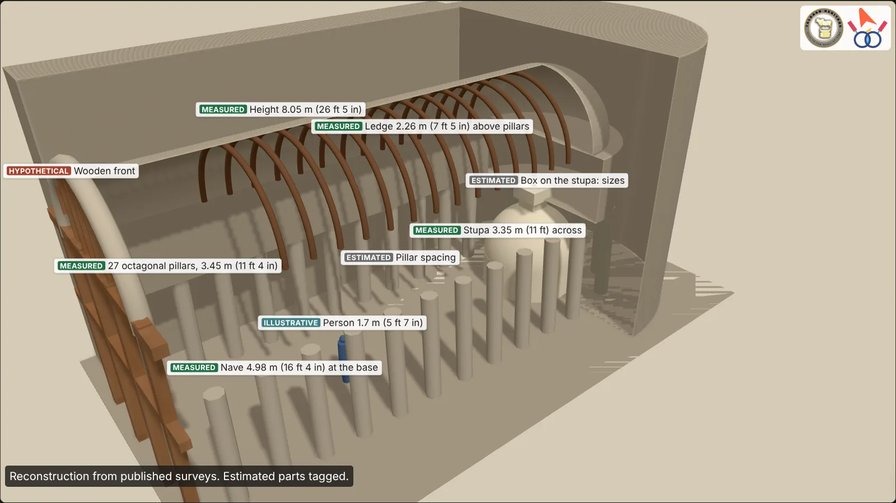

Archaeology · Interactive 3D
Bhaja Caves chaitya hall (Cave 12) in 3D
Cave 12 at Bhaja, near Lonavala in Pune district, is an early rock-cut chaitya hall: a prayer hall with a stupa at the far end, cut into the west face of a hill. This model is built from the measurements in Fergusson and Burgess's The Cave Temples of India (1880) and the 1885 Bombay Gazetteer. Drag to turn it, pinch or scroll to zoom, and use the cutaway to look inside.

Drag to turn · pinch or scroll to zoom
Reconstruction from published surveys. Estimated parts tagged.
Your browser cannot show 3D here, so this is a still view of the model. The facts are below.
- Measured
- Documented
- Hypothetical
- Estimated
- Illustrative
What is measured and what is estimated
| Date | DocumentedFergusson and Burgess (1880) put it at about 200 BCE or earlier; the 1885 Gazetteer puts the group in the 2nd and 1st centuries BCE |
|---|---|
| Setting | DocumentedThe caves are about 122 m (400 ft) above Bhaja village, in the west face of a steep hill |
| Length | Measured18.0 m (59 ft), with a semicircular apse at the back |
| Width | Measured8.13 m (26 ft 8 in) (Fergusson and Burgess); the 1885 Gazetteer gives about 29 ft (8.8 m) |
| Height | Measured8.05 m (26 ft 5 in) from the floor to the top of the vault |
| Pillars | Measured27 plain octagonal pillars, 3.45 m (11 ft 4 in) high, raking inward about 13 cm (5 in) on each side |
| Nave and aisles | MeasuredNave 4.98 m (16 ft 4 in) wide at the pillar bases and 4.72 m (15 ft 6 in) at their tops; aisles 1.04 m (3 ft 5 in) |
| Vault | MeasuredRises from a narrow ledge 2.26 m (7 ft 5 in) above the pillar tops; ribbed with teak, of which the first four ribs and parts of others had given way or been pulled down by 1880 |
| Stupa | Measured3.35 m (11 ft) across at the floor; drum 1.22 m (4 ft) high; dome 1.83 m (6 ft) high; a two-storeyed box on top with a hole 18 cm (7 in) across and about 51 cm (20 in) deep |
| Front | DocumentedEntirely of wood: four holes in the floor for the main uprights, mortices in the arch for a cross-beam, about 170 pin holes in three rows on the great arch |
| Inside | DocumentedThe 1880 and 1885 surveys record carved symbols on four pillars but no image of the Buddha |
| Wooden front | HypotheticalThe screen, doors and lattice as drawn here: only the sockets, mortices and pin holes survive |
| Pillar and rib spacing, box sizes, aisle ceiling, rock outside the hall | EstimatedNot given in the surveys |
| Person | Illustrative1.7 m (5 ft 7 in), for scale |
About this model
The hall was not all rock. Its vault was lined with teak ribs, and Fergusson and Burgess concluded that the front must have been entirely of wood: four holes in the floor, mortices in the arch and some 170 pin holes show where it was fixed. None of that woodwork survives, so the front in the model is marked hypothetical; switch it off to see only what the rock records.
The stupa stands in the apse at the far end of the nave. The model shows no figures in the hall: the surveys record only a few carved symbols on four pillars.
Plan a visit
Bhaja is near Lonavala in Pune district, Maharashtra. We cover it in our guide to India's Buddhist caves and on heritage walks in Pune.
Follow the series: @talaashheritage and @archaeologywala
Sources
- J. Fergusson and J. Burgess, The Cave Temples of India (London, 1880), pp. 182, 223–225 and plate IX (plan and section).
- Gazetteer of the Bombay Presidency, vol. XVIII, part III, Poona (Bombay, 1885), "Bhaja".
- Archaeological Survey of India, list of centrally protected monuments, Mumbai Circle: "Cave temples and inscriptions, Bhaja".
Model built with three.js by Talaash Heritage. Published 2026-11-11.